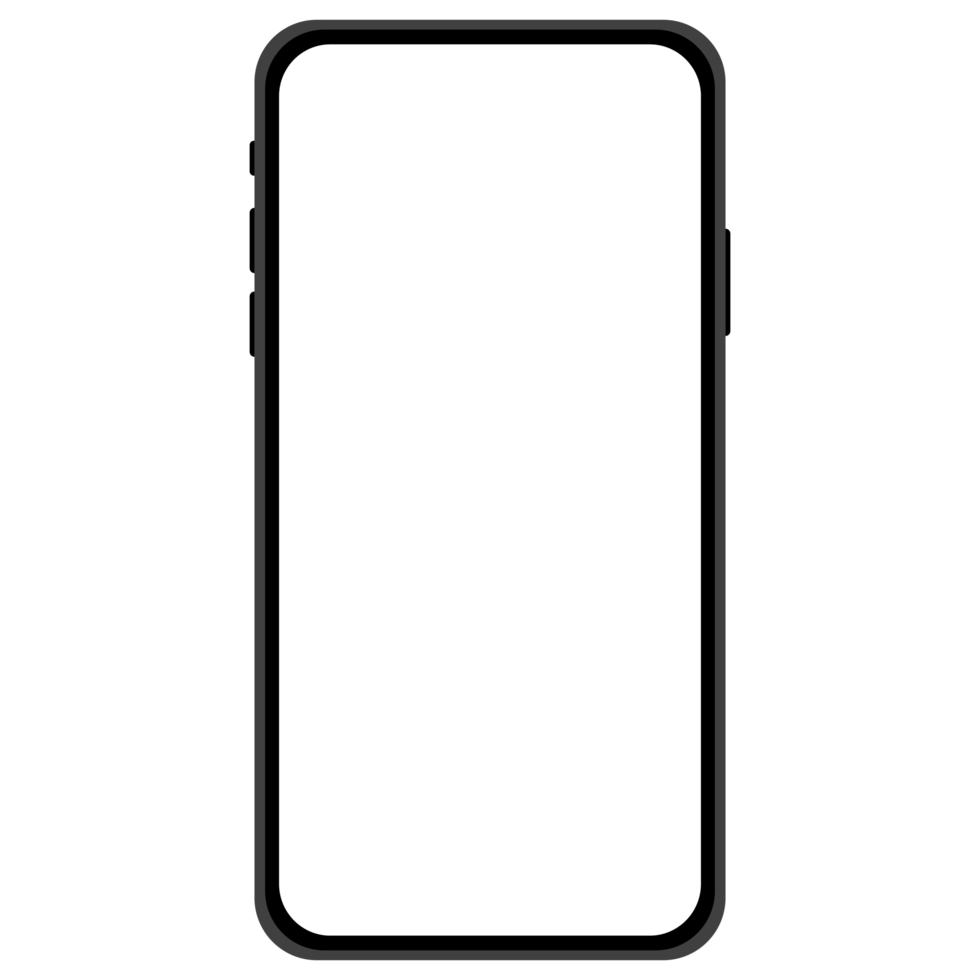

Crops app

Menú principal desde el que acceder a todas las funciones disponibles.
Administrar las parcelas del usuario, con la localización exacta y el tipo de cultivo. Así la aplicación podrá recomendarle un sistema de regadío optimizado en función del cultivo y de las precipitaciones de la zona.
Texto explicativo sobre la tercera imagen. Más detalles o información complementaria sobre esta imagen.

Científico del Applied Sciences Project : Ben Zaitchik (Universidad de Johns Hopkins)